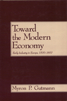

A social history of the pre-industrial revolution in early modern Europe
A social history of the pre-industrial revolution in early modern Europe


 A social history of the pre-industrial revolution in early modern Europe
A social history of the pre-industrial revolution in early modern Europe

|  |
Toward the Modern EconomyEarly Industry in Europe, 1500-1800Myron P. Gutmanncloth EAN: 978-0-87722-547-8 (ISBN: 0-87722-547-8) |
"Gutmann�s ambitious effort expands the terrain on which the battles over the �industrial revolution� are fought."
—Jan de Vries, University of California, Berkeley
This social history of the pre-industrial revolution in early modern Europe emphasizes the interrelatedness of social, economic, and demographic change and demonstrates that there was a logic of industrial change that made the introduction of factories a likely outcome of earlier developments. Myron P. Gutmann traces the history of industry from the guild-dominated medieval urban organizations to their replacement by rural cottage industry and then, at the end of the eighteenth century, to the construction of factories.
Unlike most studies of this period, which focus on industrialization in England, Toward the Modern Economy examines all of Europe. Using primary documents and detailed case studies of the Low Countries, especially Belgium, Gutmann shows how major economic changes, such as the development of large-scale cottage industry, were accompanied by equally fundamental social changes. He describes how industrial change created a new society, one that was a hybrid between the peasantry and the urban proletariat.
Linking economic, social, and demographic developments, this history of the pre-industrial revolution provides a new context within which to understand the growth of mechanized industry.
Myron P. Gutmann is Associate Professor of History at the University of Texas, Austin and the author of War and Rural Life in the Early Modern Low Countries.
History
Labor Studies and Work
© 2015 Temple University. All Rights Reserved. This page: http://www.temple.edu/tempress/titles/579_reg.html.